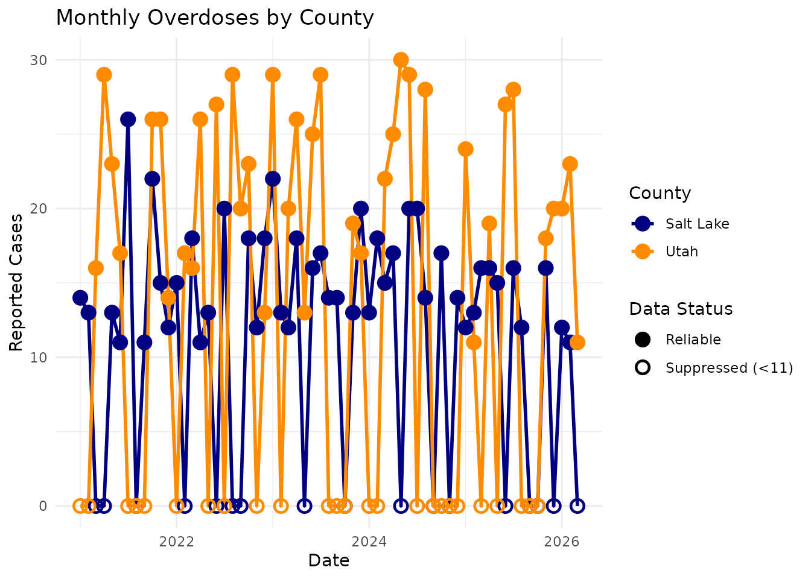
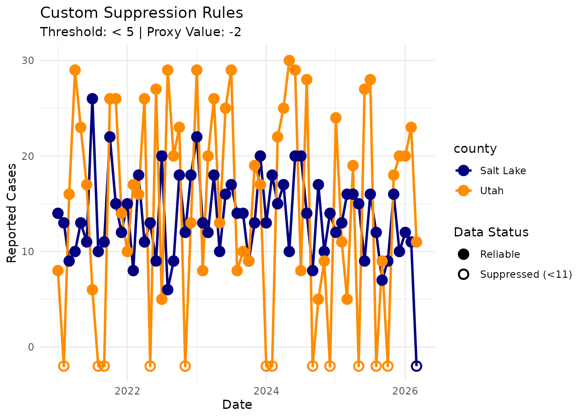
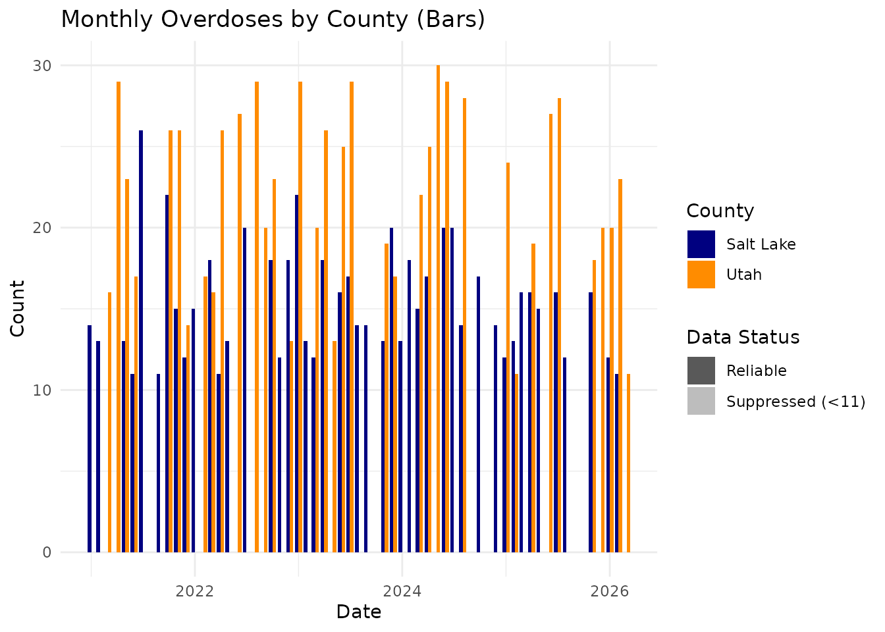

Small Number Suppression
Source:vignettes/small-number-suppression.Rmd
small-number-suppression.RmdIntroduction
In public health informatics, it is often necessary to employ small-number suppression to protect patient privacy and prevent the misinterpretation of unstable rates. A common health data reporting threshold may suppress case counts less than 11, for example.
The ggsuppress package provides custom
ggplot2 geometries to automatically apply these suppression
rules, plot the suppressed data at a proxy value (like 0), and uniquely
symbolize the suppressed points.
Let’s load the necessary packages and explore the built-in
overdoses dataset.
library(ggsuppress)
library(ggplot2)
# The overdoses dataset contains monthly counts for Salt Lake and Utah counties
head(overdoses)
#> # A tibble: 6 × 3
#> county month_date count
#> <chr> <date> <int>
#> 1 Salt Lake 2021-01-01 14
#> 2 Salt Lake 2021-02-01 13
#> 3 Salt Lake 2021-03-01 9
#> 4 Salt Lake 2021-04-01 10
#> 5 Salt Lake 2021-05-01 13
#> 6 Salt Lake 2021-06-01 11Basic Time-Series Plot
To plot this data with automatic suppression, we simply swap out our
standard ggplot2 geometries for their ggsuppress
equivalents: geom_line_suppressed() and
geom_point_suppressed().
We will also use scale_shape_suppress() to automatically
generate hollow points for any values that fell below our threshold
(11).
ggplot(overdoses, aes(x = month_date, y = count, color = county)) +
# Draw the lines - ggplot will automatically group them by county
geom_line_suppressed(linewidth = 1) +
# Draw the points - they will automatically change shape based on suppression
geom_point_suppressed(size = 3, stroke = 1.2) +
# Standard color mapping
scale_color_manual(
name = "County",
values = c("Salt Lake" = "navy", "Utah" = "darkorange")
) +
# Custom ggsuppress scale for hollow/solid shapes
scale_shape_suppress() +
theme_minimal() +
labs(
title = "Monthly Overdoses by County",
x = "Date",
y = "Reported Cases"
)
Customizing the Threshold and Proxy Value
What if you are producing a report that requires a different suppression rule, such as < 5? Or perhaps you want to plot the suppressed values below the x-axis (e.g., -2) so they don’t overlap with true zero counts?
You can easily adjust the threshold and
proxy_value parameters inside the geom functions.
ggplot(overdoses, aes(x = month_date, y = count, color = county)) +
geom_line_suppressed(
threshold = 5,
proxy_value = -2,
linewidth = 1
) +
geom_point_suppressed(
threshold = 5,
proxy_value = -2,
size = 3,
stroke = 1.2
) +
scale_color_manual(values = c("Salt Lake" = "navy", "Utah" = "darkorange")) +
scale_shape_suppress() +
theme_minimal() +
labs(
title = "Custom Suppression Rules",
subtitle = "Threshold: < 5 | Proxy Value: -2",
x = "Date",
y = "Reported Cases"
)
Bar Charts and Transparency
For bar charts, changing the shape isn’t an option. Instead, geom_col_suppressed() automatically maps the suppression flag to the alpha (transparency) aesthetic. We pair this with scale_alpha_suppress() to make the suppressed bars semi-transparent.
ggplot(overdoses, aes(x = month_date, y = count, fill = county)) +
# position = "dodge" places the county bars side-by-side
geom_col_suppressed(position = "dodge", color = "black") +
scale_fill_manual(
name = "County",
values = c("Salt Lake" = "navy", "Utah" = "darkorange")
) +
# Custom ggsuppress scale for opaque/transparent bars
scale_alpha_suppress() +
theme_minimal() +
labs(
title = "Monthly Overdoses by County (Bars)",
x = "Date",
y = "Count"
)